한눈에 보기
- MSCI가 10월 15일 인도네시아를 '신흥시장'에서 '독립시장(Standalone)'으로 두 단계 내릴 수 있다고 경고했고, 다음 날 인도네시아 주가지수가 하루에 11% 넘게 떨어졌다.
- 성장률(5%대)과 정부부채(GDP 대비 약 41%) 같은 거시지표는 아직 괜찮다. 문제는 적은 유통주식 수 같은 자본시장의 불투명성, 그리고 프라보워 정부의 국가 개입과 거친 대응이다.
- 1호 공약인 무상급식에 한 해 약 20조 원이 들어가고 있다. 식중독 사고가 잇따랐고, 이를 맡은 국가영양청의 청장과 부청장이 구속되는 등 재정과 부패 문제가 함께 터졌다.
- 대통령은 MSCI 경고에 "굴하지 않겠다"고 맞섰다. 싱가포르와는 산불 연무 문제로 다투다 가스 공급을 실제로 9% 줄이기까지 했다.
- MSCI는 1월에 결정을 내린다. 남은 두 달 동안 어떻게 대응하느냐가 관건이고, 지수에서 빠지면 자본 유출 → 환율 급락 → 금융위기로 이어지는 악순환과 주변국으로의 전이가 우려된다.
이런 분께 도움이 됩니다
- 신흥국 펀드나 동남아 투자를 하거나, 인도네시아 시위·폭락 뉴스의 진짜 원인이 궁금한 분
- MSCI 지수 분류가 한 나라의 자본시장에 어떤 영향을 주는지 실제 사례로 알고 싶은 분
- 인도네시아에 진출했거나 진출을 생각하는 기업에서 일하는 분
핵심 내용
지금 벌어진 일: MSCI 강등 경고와 하루 11% 폭락
- 인도네시아 지수는 1월에 9,000을 넘어 사상 최고치를 찍었다. 그 뒤 계속 내려가다 10월에 5,000선 붕괴를 한 번 막고 살짝 반등했다. (2:06)
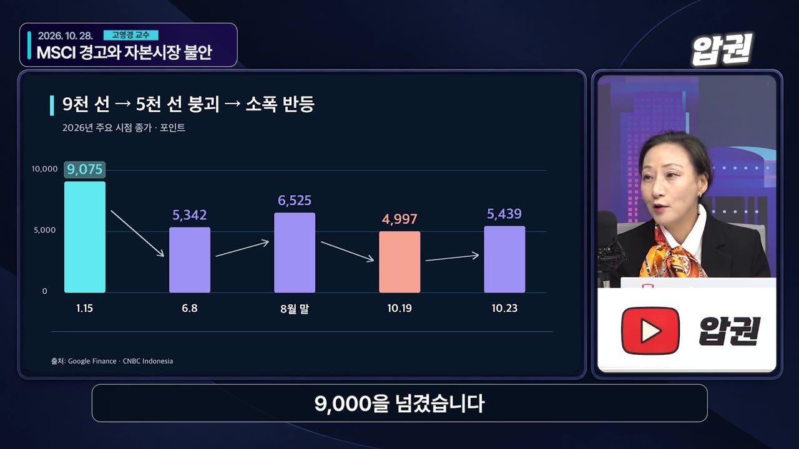
- 10월 15일 MSCI가 '재분류'를 예고했고, 16일 지수가 하루에 11% 넘게 빠졌다. MSCI는 1월부터 "재분류할 수도 있다"는 경고를 계속 보내 왔다. (3:06)
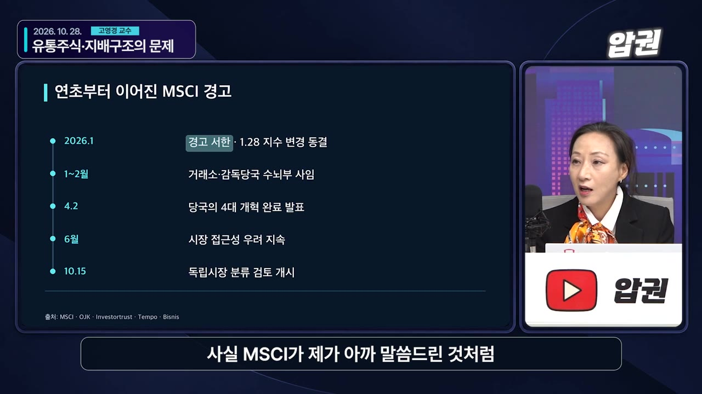
- 하루에 두 자릿수 하락은 전쟁이 아니면 보기 어려운 수치다.
- MSCI가 예고한 것은 '프론티어'도 아닌 '독립시장'으로, 두 단계를 한꺼번에 내리는 강등이다. (3:52)
| MSCI 분류 | 의미 | 해당 국가(영상 언급) |
|---|---|---|
| 선진시장 | — | — |
| 신흥시장(이머징) | 지금 위치 | 한국, 인도네시아 |
| 프론티어 시장 | 한 단계 아래 | — |
| 독립시장(Standalone) | 지수에 넣지 않음. 사실상 '나 홀로 시장' | 레바논, 짐바브웨 |
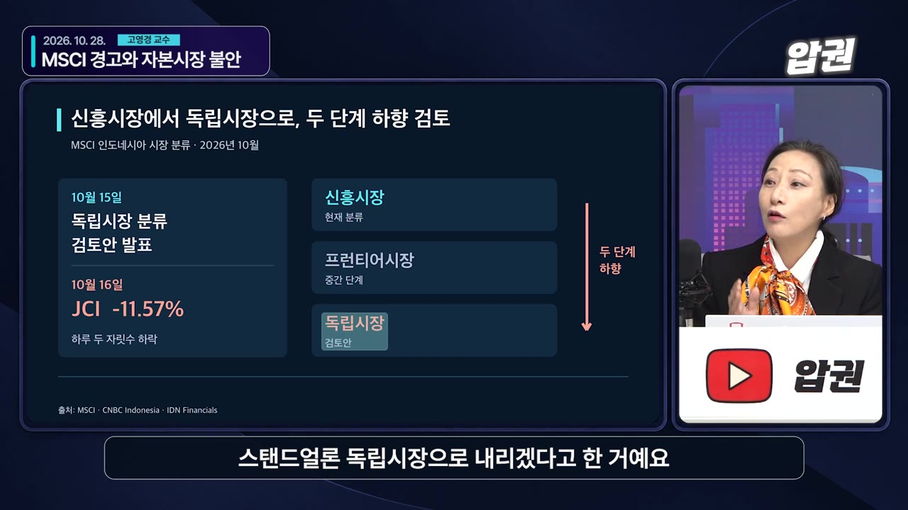
- 외국인 자금이 빠지면서 루피아 약세가 이어지고 있다.
- 주변국 통화는 제각각이다. 태국 바트는 약세, 말레이시아 링깃은 큰 변화 없음, 베트남 동은 상대적으로 강세다. 결국 루피아와 바트만 유독 약하다.
💡 동남아 전체가 함께 흔들리는 게 아니라 인도네시아만의 문제가 터진 것이다.
MSCI가 문제 삼은 것: 자본시장의 투명성
- MSCI가 가장 크게 경고한 것은 유통주식 수(시장에서 실제로 거래되는 주식 비율)가 너무 적다는 점이다. 누군가 조금만 사도 가격이 움직이니 시세 조종이 가능하다고 본 것이다. (25:02)
- 시가총액 상위 대형주(은행 등)는 괜찮지만, 상장사 약 936개 가운데 작은 종목들은 유통주식 최소 기준이 7%다. 93%가 묶여 있다는 뜻이다.
- 진행자 비교: 한국은 (최대주주 지분이) 95%를 넘으면 상장폐지된다.
- 진행자가 덧붙인 문제 두 가지
- 유동성: 지수를 따라가는 대형 펀드가 들어갈 때 유통주식이 적으면 가격을 못 버틴다.
- 거버넌스(기업 지배구조): 대주주가 93%를 갖고 있으면 소액주주 권리가 사실상 보호되지 않는다.
- 글로벌 펀드가 작은 종목을 직접 사지는 않는다. 하지만 지수를 따라가기 때문에 시장 전체의 신뢰도가 떨어지면 자기 펀드에도 문제가 생긴다.
- 인도네시아는 '4대 개혁'을 내놓았다. (27:25)
- 유통주식 비율을 15%로 올림
- 지분 1% 이상 주주 공개
- 위반 적발 시 과징금
- MSCI는 실제로 집행될지 여전히 의심하고 있다. 바로 퇴출하지는 않지만 "올해 말까지 이 수준이면 1월에 결정하겠다"는 입장이다.
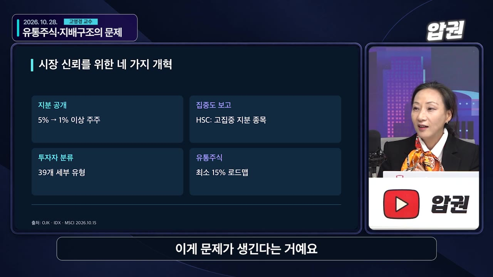
거시경제는 아직 버틴다
- 성장률은 1분기 5.6%, 2분기 5.3%이고, 올해 전체 5%, 내년 5% 안팎이 예상된다. 내수와 원자재 수출이 받쳐 주고 있다. (6:18)
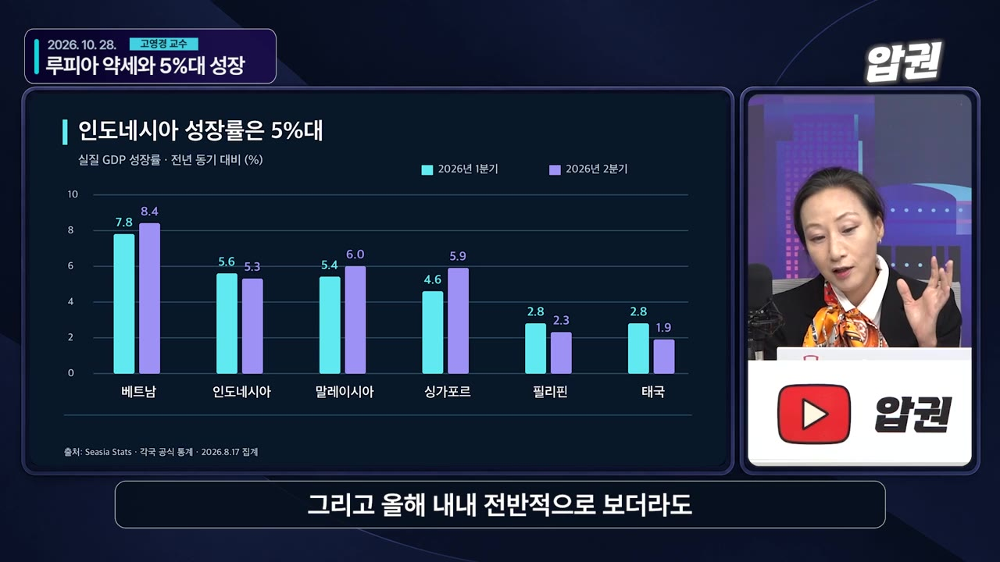
- 재정 관리 장치가 법에 있다. (35:44)
- 정부부채는 GDP의 60%를 넘지 못하게 법으로 정해 두었고, 지금은 약 41%다(프랑스는 119%).
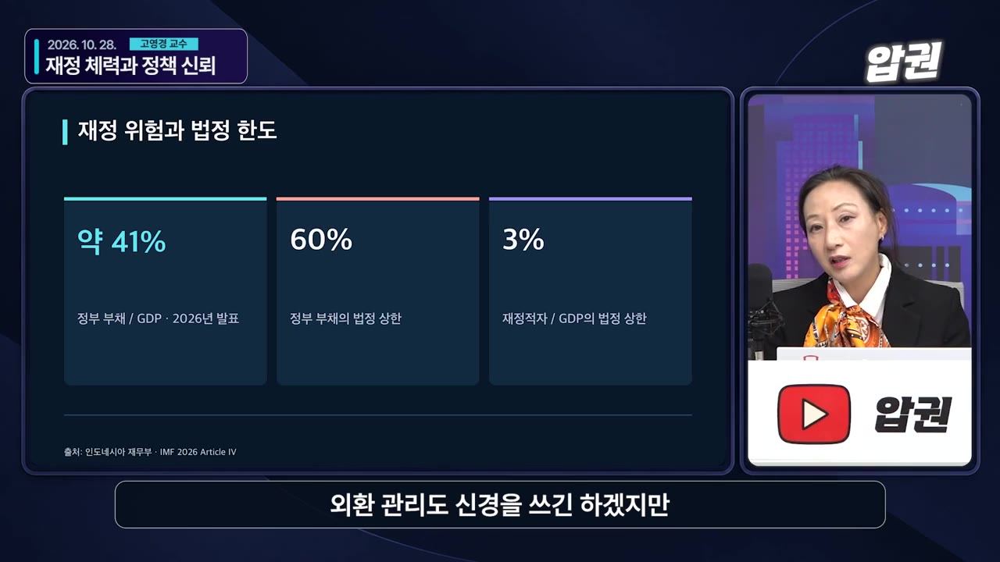
- 재정적자도 GDP의 3%를 넘지 못하게 해 두었다.
- 교수는 "이 숫자를 다 믿을 수는 없다"면서도, 대통령 취임이 얼마 안 됐으니 숫자에 빈틈이 있더라도 큰 폭은 아닐 것으로 본다.
- 국가 신용등급도 아직 나락으로 떨어지지 않았다.
- 진행자 평가: MSCI의 지적은 나라가 디폴트(채무 불이행)로 가느냐의 문제가 아니라 "국제 투자에 부적합한 자본시장"이라는 자본시장 문제다. (39:05)
💡 펀더멘털 붕괴가 아니라 '시장 신뢰'의 위기다. 그래서 정부 대응에 따라 결과가 갈린다.
프라보워 대통령은 어떤 사람인가
- 프라보워 수비안토(자막에는 '브라보·뿌라보'로 나옴)는 특수부대 출신 군인으로, 오래 독재한 수하르토 전 대통령의 사위였다. (8:42)
- 동티모르(자막상 '동팀') 진압 작전을 지휘했다는 평가가 있고, 그때 많은 살상이 있었다.
- 국가 주도와 민족주의 성향이 강하다. 무상급식은 국가가 해 줘야 한다고 보고, 석탄·니켈도 그냥 캐서 팔지 말고 국내에서 가공해 수출하라는 입장이다. 국민 지지를 받은 기조다.
- 정치 이력과 '보은' 구조 (9:39)
- 수하르토 정권이 무너진 뒤 불명예 전역하고 재판 없이 해외를 떠돌다 2008년에 돌아와 창당했다.
- 대선에 두 번 나와 두 번 다 조코위에게 졌다. 그 과정에서 돈을 많이 썼고, 도와준 기부자들에게 되갚아야 하는 상황이 됐다.
- 인도네시아에는 한국 같은 선거비용 보전 제도가 없다. 섬 17,500개 어디서나 투표가 이뤄질 만큼 민주주의가 자리 잡았지만, 그만큼 선거비가 많이 든다.
- 2024년에 조코위 전 대통령의 장남 기브란을 러닝메이트로 세워 압도적인 지지로 당선됐다. (11:33)
- 조코위의 '수렴청정'을 예상한 사람이 많았지만 교수는 처음부터 그럴 리 없다고 봤다. 다만 1년 정도는 기존 기조를 유지할 거라는 예상은 빗나갔다. "권력은 나눠지지 않는다"는 것이다.
- 사상 최대 내각을 만들었다. 모두 111명(장관 48, 차관 58, 장관급 기관장 5)이다.
- 군인이 할 수 있는 일을 늘리면서 "군의 민간 진출을 막아 온 노력이 퇴보하고 민주주의가 후퇴한다"는 비판이 나온다.
무상급식: 재정과 부패의 블랙홀
- 1호 공약이다. 처음 계획은 인구 2억 8천만 명 가운데 초중고생과 임산부, 저소득층까지 8천만 명 이상에게 급식을 주는 것이었다. (7:13)
- 교육부 예산으로는 감당이 안 돼 따로 예산을 잡았는데, 전체 예산의 10%에 육박했다.
- 이대로는 안 된다고 보고 대상을 약 5,700만 명으로 줄였다. 한국 인구보다 많다.
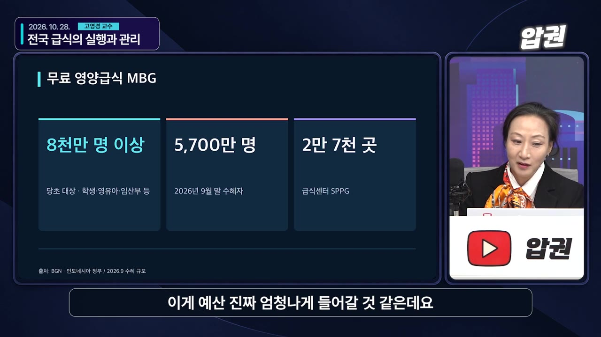
- 예산은 한국 돈으로 한 해 약 20조 원이다. 자막상 루피아 기준 335조 → 268조로 삭감됐고, 단계적으로 다시 추진하겠다고 했다. 내년 예산에서는 조정이 불가피할 것으로 본다. (18:50)
- 준비 없이 시작해 식중독 사고가 아주 많이 났다.
- 인도네시아는 동쪽 끝에서 서쪽 끝까지 5,000km(런던~모스크바 거리)이고 섬이 약 17,500개다. 적도에 걸친 더운 나라인데 콜드체인(냉장 유통망)이 충분하지 않다.
- 부패도 터졌다. 사업을 관리하려고 만든 국가영양청의 청장과 부청장이 구속됐고, 지금도 부패 의심으로 조사받는 곳이 많다. (17:08)
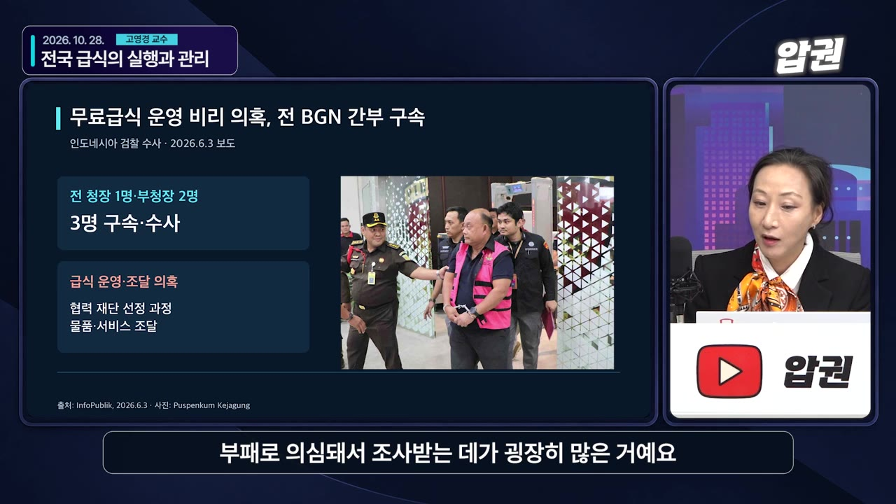
- 선거 때 도와준 사람들이 급식 사업에 연결되지 않았으리란 보장이 없다.
- '주방 지정권'이 이권이 됐다. 학교에 조리시설이 없어서 밖의 급식센터가 음식을 만드는데, 이 센터는 국가 승인이 있어야 한다.
- 급식센터는 약 2만 7천 개다. 5천만 명 규모라 계란 하나씩만 납품해도 큰 사업이 된다.
- 지방에는 운영을 맡을 곳이 마땅치 않아 군·경찰 출신이 맡는 경우가 생기고, 이 때문에 "자리를 만들어 주려는 것 아니냐"는 의심을 산다.
💡 예산 10%를 빨아들인 공약이 재정 여력을 줄이고, 그것이 연료 보조금 부족과 부패 의혹으로 번졌다.
자원민족주의와 '자본 통제' 신호
- 니켈 원광 수출 금지는 조코위 때부터 있던 정책이다. 프라보워 정부는 여기에 더해 가격을 통제하려고 채굴 쿼터를 할당하고 생산량을 줄였다. (12:30)
- 원광 수출 금지 때문에 중국 니켈 제련 기업들이 인도네시아에 대거 투자했는데, 그 뒤 생산을 줄여 버린 것이다.
- 국부펀드 '다난타라(Danantara)'를 만들어 모든 자원을 관리하겠다고 했다. 진행자는 사우디 모델을 흉내 낸 것 같다고 평했다.
- 수출 창구를 하나로 묶고, 수출 대금을 국영은행에 예치하게 했다. 장표에는 '12개월 이상 국내 예치'가 나온다. (13:37, 15:12)
- 외국인 걱정: 정부 뜻에 따라 달러 자산이 묶일 수 있는 구조다. 한 번 묶인 돈은 빼기 어렵고, 루피아가 불안정해 환율 위험까지 져야 한다.
- 교수: "못 받기야 하겠냐"만, 국가가 계속 개입하는 것 자체를 외국 기업이 꺼린다.
기름값 인상과 시위
- 인도네시아는 석탄, 니켈, 팜유(세계 1위로 국제 가격을 움직일 정도) 등 자원 대국이다. 석유도 나지만 상업성이 떨어져 수입해서 쓴다. (23:43)
- 정제시설이 부족하고 한국처럼 비축유 시설이 많지도 않은데, 중동 전쟁까지 겹쳤다.
- 서민에게 오토바이는 생계 수단이자 교통수단이다. 그래서 판매 가격에 정부 보조금이 들어가 있고, 유가가 오르면 보조금 부담이 커진다.
- 지출이 많아 보조금 여력이 줄면서 기름값이 올랐고, 이것이 시위의 발단이 됐다.
- 진행자: 유가 보조금은 "전형적인 개발도상국 나락 시나리오"이고, 한 번 그 함정에 빠지면 나오기 어렵다.
MSCI 경고에 대한 정부의 거친 대응
- 대통령: "MSCI가 우리를 겁주려 한다. 이런 압박에 굴하지 않고 희생할 각오가 되어 있다." (28:28)
- 장관들은 오히려 한술 더 떴다.
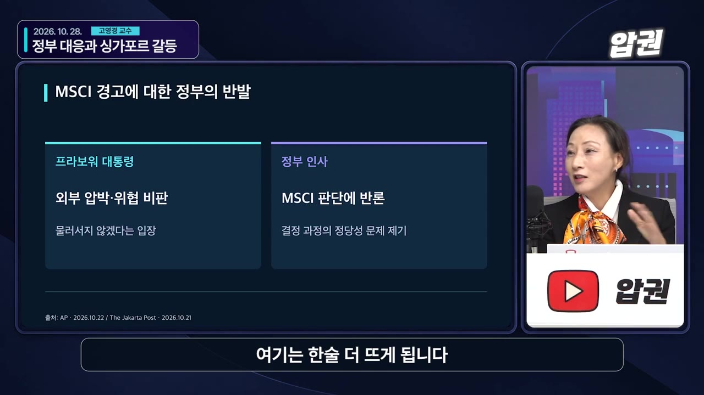
- 한 장관: "MSCI가 항상 옳지는 않다."
- 전직 무역장관인 현직 의원: 배후에 싱가포르(테마섹)가 있고, 인도네시아 기업 가치를 떨어뜨려 헐값에 사려 한다는 주장. 근거는 없고, 싱가포르가 곧바로 반박했다.
- 거래소 쪽은 "지수사업자는 독립적이고 우리는 그렇게 생각하지 않는다"며 한발 물러섰다. (35:44)
- 신뢰받던 경제 수장들이 교체됐다. 해외에서 신망이 높던 인사(자막상 '수리물리안', 영상에서는 중앙은행 총재로 언급)가 자리를 지키는 동안은 시장이 버텼다. 하지만 재무장관과 중앙은행 총재가 바뀔 때마다 시장이 출렁였다. (37:29)
💡 펀더멘털보다 '말'이 시장을 더 흔들고 있다. 강경 발언이 한 번 나올 때마다 신뢰 비용이 쌓인다.
싱가포르와의 갈등: 산불 연무와 가스 공급 축소
- 올해 인도네시아 산불이 유독 심했다. 자연 발화도 있지만 팜 농장의 화전도 원인이다. (31:15)
- 생산성이 떨어진 노후 팜나무는 베는 데 돈이 많이 들어 태우기도 하고, 숲을 태워 농장으로 만들기도 한다.
- 인도네시아의 주장: 인도네시아 기업만이 아니라 싱가포르 기업도 여기서 사업하고 있다.
- 연무 때문에 싱가포르와 말레이시아에 휴교령이 내려졌고, 태국까지 번졌다. 교수는 2015년 말레이시아에서 집 밖에 못 나갔던 경험을 들었다.
- 싱가포르가 화전 기업 조사에 들어가자 인도네시아 에너지장관이 "우리를 존중하지 않는 나라에 LNG·PNG를 끊겠다"고 했고, 지난 주말 가스 공급을 약 9% 실제로 줄였다. (33:04)
- 싱가포르는 전력의 90% 이상을 LNG로 만들지만 수입선을 다변화했다. 줄어든 양은 전체 소비의 약 2%라 타격은 크지 않다.
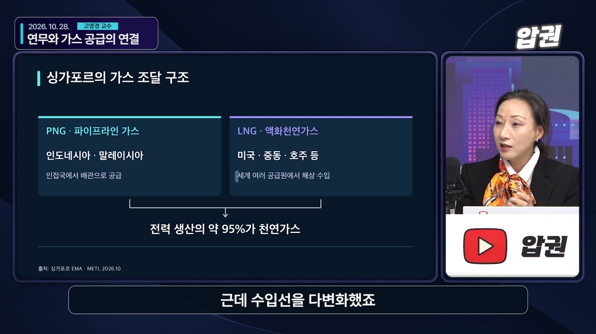
- 장관 회담 뒤 산불·연무(헤이즈) 공동 대응 태스크포스를 만들기로 하고 일단락됐다.
- 교수 해석
- 내부 문제를 외부의 적으로 돌리려는 외교 제스처
- 산불 문제에 싱가포르가 더 적극적으로 참여하게 만들려는 지렛대
- 말로만 했어야 할 카드를 실제로 쓴 것은 오히려 자충수가 될 수 있다(자원의 무기화).
앞으로: 남은 두 달이 갈림길
- 연말까지 약 두 달 동안 합리적으로 대응하면 독립시장으로 떨어지지 않을 가능성이 아직 남아 있다.
- 지금 자세를 유지하다 지수에서 빠지면 아래 악순환에 들어간다는 것이 교수의 경고다. (39:58)
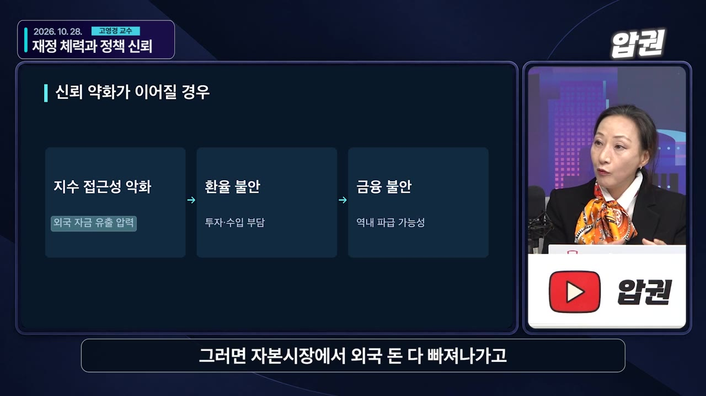
🔁 MSCI 지수에서 빠질 경우의 악순환
- 지수 퇴출
- 외국 자본 유출
- FDI 중단
- 환율 급락
- 수입 부담 증가
- 금융위기 가능성
- 1지수 퇴출
독립시장으로 강등돼 글로벌 지수에서 빠짐
- 2외국 자본 유출
자본시장의 외국인 자금이 모두 빠져나감
- 3FDI 중단
새로 들어오는 직접투자 자금이 끊김
- 4환율 급락
루피아 가치가 더 떨어짐
- 5수입 부담 증가
연료처럼 수입해야 하는 물자 값이 올라 악순환이 굳어짐
- 6금융위기 가능성
이 단계에 이르면 실제 금융위기가 올 수 있음
- 주변국으로 전이될 위험도 있다. 동남아 나라들은 서로 투자로 얽혀 있다. (40:53)
- 말레이시아 2위 은행 CIMB는 인도네시아에 아주 많이 투자했다(1위는 메이뱅크).
- 싱가포르는 투자가 세계에 분산돼 있어 상대적으로 덜하지만, 말레이시아 은행 하나가 어려워지면 타격이 더 클 수 있다. "인도네시아가 무너지면 태국도 위험하다"는 말도 이런 맥락이다.
덧붙임: 수도 이전 배경
- 자카르타가 가라앉고 있다. 식민지 시절부터 지하수를 뽑아 써서, 북쪽 해안에 방파제를 쌓아도 물이 계속 들어온다. 돈을 쏟아부어도 해결되지 않는다. (41:44)
- 과밀도 심하다. 차가 막혀 하루에 미팅을 2개 넘게 하기 어렵다.
- 도심에서 차량 홀짝제를 시행하는데 전기차는 예외다. 부자들은 홀수·짝수 번호판 차를 한 대씩 더 산다.
- 자카르타에 1천만 명 이상, 광역권까지 치면 약 3천만 명이 산다.
덧붙임: 아세안을 보는 시각
- KF-21 분담금 갈등으로 한국인의 인도네시아 인식이 나쁘다. 하지만 인도네시아도 사정이 있었고, 결국 분담금을 줄여 마무리했다. 계속 비난만 하면 다음에 팔 수 있는 것도 못 판다. (44:04)
- 프라보워는 튀르키예 전투기와 프랑스 라팔 등 여러 무기를 사들이고 있어 비판받을 만하다. 그래도 개인 차원의 감정으로 번지면 한국 기업 진출에 불리하다.
- '삼성 베트남 철수설' 같은 AI 짤과 아세안을 깎아내리는 콘텐츠가 조회수가 잘 나온다. 하지만 동남아에서도 AI 번역으로 한국 콘텐츠를 다 본다.
- 올해만 해도 삼성전기, 삼성전자, LG이노텍(자막상 'lg인호텔')이 베트남에 투자를 많이 했다.
- 한국 기업이 가장 많이 진출한 나라는 베트남, 다음이 인도네시아다. 한화생명은 인도네시아 은행을 인수해 운영하고 있다. (48:11)
기억할 숫자·인용
| 항목 | 숫자 |
|---|---|
| 지수 고점 → 저점 | 1월 9,000 돌파 → 10월 5,000선 위협 |
| MSCI 발표 다음 날 하락폭 | 하루 -11% 이상 (10/15 발표, 10/16 반영) |
| 성장률 | 1분기 5.6%, 2분기 5.3%, 올해·내년 5% 안팎 |
| 정부부채 | GDP 대비 약 41% (법정 상한 60%), 재정적자 상한 3% |
| 무상급식 대상 | 계획 8천만 명 이상 → 약 5,700만 명으로 축소 |
| 무상급식 예산 | 한 해 약 20조 원 (예산의 10% 육박 수준이었음) |
| 급식센터 | 약 2만 7천 개 |
| 내각 규모 | 111명 (장관 48, 차관 58, 장관급 기관장 5) |
| 유통주식 기준 | 작은 종목 최소 7% → 개혁안 15% |
| 상장사 수 | 약 936개 |
| 대싱가포르 가스 감축 | 약 9% (싱가포르 전체 소비의 약 2%) |
| 국토 | 동서 5,000km, 섬 약 17,500개, 인구 2억 8천만 명 이상 |
- "MSCI가 우리를 겁주려 한다. 우리는 희생할 각오가 되어 있다." — 프라보워 대통령(영상 속 인용)
- "역시 권력은 나눠지지 않습니다." — 고영경 교수
- "만약 이 두 달 동안 지금 같은 자세를 유지하다 지수에서 빠지면 그다음부터는 악순환에 들어가는 거예요." — 고영경 교수
생각해볼 점
- 영상 속 진단: 출연자들은 이번 일을 '국가 디폴트'가 아니라 '자본시장 신뢰'의 문제로 봤다. 내 생각: 다만 무상급식(예산 10% 수준)과 연료 보조금이 동시에 재정을 압박하고 있어, 정부부채 41%라는 숫자만으로 안심하기는 이르다. 교수도 "숫자를 다 믿을 수는 없다"고 했다.
- 확인이 필요한 부분: 자막의 '수리물리안'은 재무장관이었던 스리 물야니(Sri Mulyani)로 보이지만, 영상에서는 중앙은행 총재로 말해 엇갈린다. 루피아 예산 금액(335조 → 268조)도 단위와 연도가 자막상 불분명하니 원문 뉴스로 확인하는 게 좋다.
- 투자 관점: MSCI가 실제로 강등할지는 1월 결정을 봐야 한다. 영상 속 주장은 전망일 뿐이니, 신흥국 펀드 안의 인도네시아 비중과 MSCI 공식 발표를 직접 확인해야 한다.
바로 해볼 일
- 내가 가진 신흥국·아세안 펀드에서 인도네시아 비중이 얼마인지 운용보고서로 확인하기
- MSCI 연례 시장 분류 발표 일정(1월)을 달력에 적어 두고 결과 확인하기
- 인도네시아 관련 뉴스를 볼 때 '정부 발언'과 '실제 개혁안 집행(유통주식 15% 등)'을 구분해 따라가기